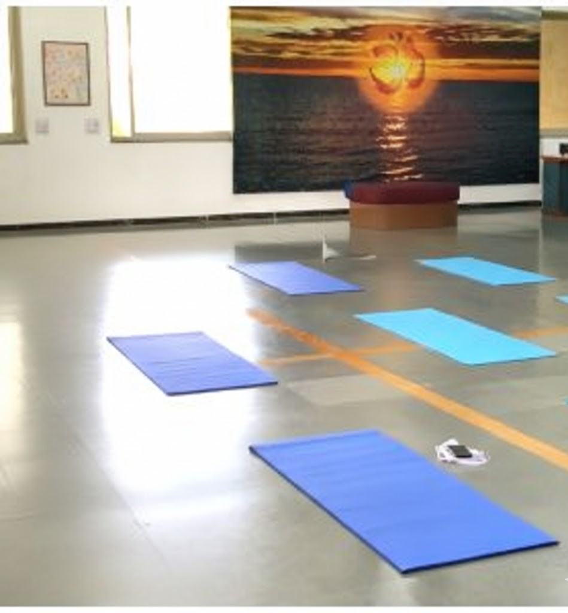

(1)Primary use:
-Yoga and Meditation Sessions: Serving as a space for regular practice to balance physical, mental, and spiritual well-being.
-Stress Management: Helping members of the university community manage stress and anxiety.
-Physical Fitness: Providing a space to improve body flexibility.
(2)Location:
The Yoga Hall is located inside the Student Activity Center (SAC) at Nirma University.
(3)Facilities:
Atmosphere: Unlike the gym or indoor games area which can be noisy, the Yoga Hall is a spacious, quiet room designated specifically for meditation and yoga practice.
(4)Timings:
Evening: The SAC facilities (like the gym) are typically fully operational from 4:00 PM to 8:00 PM.
Morning: Yoga halls often have early morning access for fresh air practice, but you should confirm specific morning unlock times with the SAC caretaker or sports officer on site.
Nirma University has dedicated, spacious yoga halls across its various institutes (like Management, Law, Science) to support the holistic well-being of students, faculty, and staff, offering spaces for regular yoga practice, meditation, stress management, and physical fitness, often facilitated by qualified instructors and highlighted during events like the International Day of Yoga.